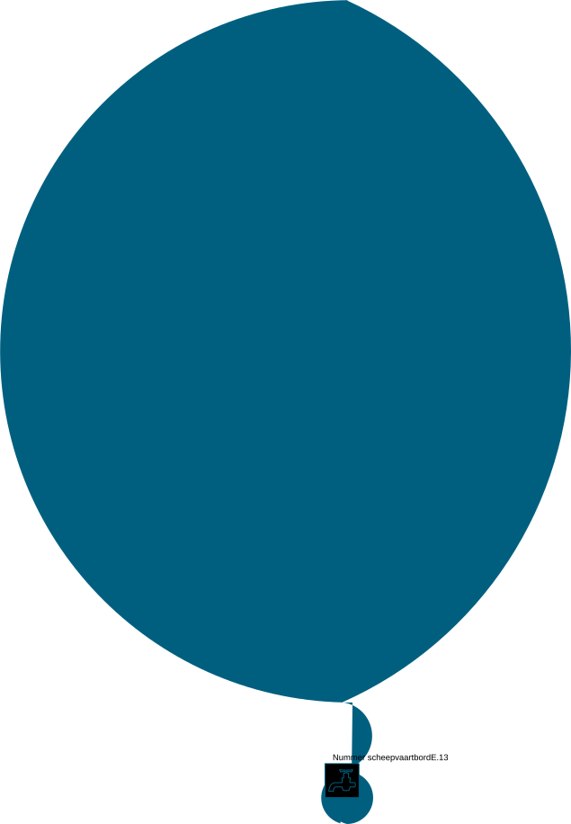
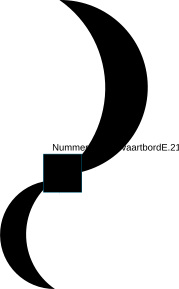
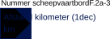
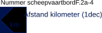
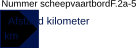

129 symbolen â hiërarchisch gegroepeerd op zoekfilter (V-/B-varianten genegeerd voor groepering)
| Niveau 1 | Niveau 2 | Niveau 3 | Niveau 4 | Niveau 5 | Niveau 6 | Symbool (bestand) | Afbeelding | Status |
|---|---|---|---|---|---|---|---|---|
| SVV | SVV-BETONNING | SVV-BETONNING-SO | neutraal | |||||
| SVV-MARKERING | SVV-MARKERING_BETONNING | SVV-MARKERING_BETONNING_BYZONDER | SVV-MARKERING_BETONNING_BYZONDER_LINKS | SVV-MARKERING_BETONNING_BYZONDER_LINKS-SO | neutraal | |||
| SVV-MARKERING_BETONNING_BYZONDER_RECHTS | SVV-MARKERING_BETONNING_BYZONDER_RECHTS-SO | neutraal | ||||||
| SVV-MARKERING_BETONNING_HOOFD | SVV-MARKERING_BETONNING_HOOFD_LINKS | SVV-MARKERING_BETONNING_HOOFD_LINKS-SO | neutraal | |||||
| SVV-MARKERING_BETONNING_HOOFD_RECHTS | SVV-MARKERING_BETONNING_HOOFD_RECHTS-SO | neutraal | ||||||
| SVV-MARKERING_BETONNING_RECREATIE | SVV-MARKERING_BETONNING_RECREATIE_LINKS | SVV-MARKERING_BETONNING_RECREATIE_LINKS-SO | neutraal | |||||
| SVV-MARKERING_BETONNING_RECREATIE_RECHTS | SVV-MARKERING_BETONNING_RECREATIE_RECHTS-SO | neutraal | ||||||
| SVV-MARKERING_BETONNING_SCHEIDING | SVV-MARKERING_BETONNING_SCHEIDING_GELIJK | SVV-MARKERING_BETONNING_SCHEIDING_GELIJK-SO | neutraal | |||||
| SVV-MARKERING_BETONNING_SCHEIDING_HOOFDVAARWATER | SVV-MARKERING_BETONNING_SCHEIDING_HOOFDVAARWATER_LINKS | SVV-MARKERING_BETONNING_SCHEIDING_HOOFDVAARWATER_LINKS-SO | neutraal | |||||
| SVV-MARKERING_BETONNING_SCHEIDING_HOOFDVAARWATER_RECHTS | SVV-MARKERING_BETONNING_SCHEIDING_HOOFDVAARWATER_RECHTS-SO | neutraal | ||||||
| SVV-MARKERING_BETONNING_VEILIG VAARWATER | SVV-MARKERING_BETONNING_VEILIG VAARWATER-SO | | neutraal | |||||
| SVV-VERKEERSTEKEN | SVV-VERKEERSTEKEN_A1 | SVV-VERKEERSTEKEN_A1-SO | neutraal | |||||
| SVV-VERKEERSTEKEN_A1_A | SVV-VERKEERSTEKEN_A1_A-SO | neutraal | ||||||
| SVV-VERKEERSTEKEN_A10L | SVV-VERKEERSTEKEN_A10L-SO | neutraal | ||||||
| SVV-VERKEERSTEKEN_A10R | SVV-VERKEERSTEKEN_A10R-SO | neutraal | ||||||
| SVV-VERKEERSTEKEN_A11 | SVV-VERKEERSTEKEN_A11-SO | neutraal | ||||||
| SVV-VERKEERSTEKEN_A12 | SVV-VERKEERSTEKEN_A12-SO | neutraal | ||||||
| SVV-VERKEERSTEKEN_A13 | SVV-VERKEERSTEKEN_A13-SO | neutraal | ||||||
| SVV-VERKEERSTEKEN_A14 | SVV-VERKEERSTEKEN_A14-SO | neutraal | ||||||
| SVV-VERKEERSTEKEN_A15 | SVV-VERKEERSTEKEN_A15-SO | neutraal | ||||||
| SVV-VERKEERSTEKEN_A16 | SVV-VERKEERSTEKEN_A16-SO | neutraal | ||||||
| SVV-VERKEERSTEKEN_A17 | SVV-VERKEERSTEKEN_A17-SO | neutraal | ||||||
| SVV-VERKEERSTEKEN_A18 | SVV-VERKEERSTEKEN_A18-SO | neutraal | ||||||
| SVV-VERKEERSTEKEN_A19 | SVV-VERKEERSTEKEN_A19-SO | neutraal | ||||||
| SVV-VERKEERSTEKEN_A2 | SVV-VERKEERSTEKEN_A2-SO | neutraal | ||||||
| SVV-VERKEERSTEKEN_A20 | SVV-VERKEERSTEKEN_A20-SO | neutraal | ||||||
| SVV-VERKEERSTEKEN_A3 | SVV-VERKEERSTEKEN_A3-SO | neutraal | ||||||
| SVV-VERKEERSTEKEN_A4 | SVV-VERKEERSTEKEN_A4-SO | neutraal | ||||||
| SVV-VERKEERSTEKEN_A4_1 | SVV-VERKEERSTEKEN_A4_1-SO | neutraal | ||||||
| SVV-VERKEERSTEKEN_A5 | SVV-VERKEERSTEKEN_A5-SO | neutraal | ||||||
| SVV-VERKEERSTEKEN_A5_1 | SVV-VERKEERSTEKEN_A5_1-SO | neutraal | ||||||
| SVV-VERKEERSTEKEN_A6 | SVV-VERKEERSTEKEN_A6-SO | neutraal | ||||||
| SVV-VERKEERSTEKEN_A7 | SVV-VERKEERSTEKEN_A7-SO | neutraal | ||||||
| SVV-VERKEERSTEKEN_A8 | SVV-VERKEERSTEKEN_A8-SO | neutraal | ||||||
| SVV-VERKEERSTEKEN_A9 | SVV-VERKEERSTEKEN_A9-SO | neutraal | ||||||
| SVV-VERKEERSTEKEN_B1 | SVV-VERKEERSTEKEN_B1-SO | neutraal | ||||||
| SVV-VERKEERSTEKEN_B11A | SVV-VERKEERSTEKEN_B11A-SO | neutraal | ||||||
| SVV-VERKEERSTEKEN_B11B | SVV-VERKEERSTEKEN_B11B-SO | neutraal | ||||||
| SVV-VERKEERSTEKEN_B2A | SVV-VERKEERSTEKEN_B2A-SO | neutraal | ||||||
| SVV-VERKEERSTEKEN_B2B | SVV-VERKEERSTEKEN_B2B-SO | neutraal | ||||||
| SVV-VERKEERSTEKEN_B3A | SVV-VERKEERSTEKEN_B3A-SO | neutraal | ||||||
| SVV-VERKEERSTEKEN_B4A | SVV-VERKEERSTEKEN_B4A-SO | neutraal | ||||||
| SVV-VERKEERSTEKEN_B4B | SVV-VERKEERSTEKEN_B4B-SO | neutraal | ||||||
| SVV-VERKEERSTEKEN_B5 | SVV-VERKEERSTEKEN_B5-SO | neutraal | ||||||
| SVV-VERKEERSTEKEN_B6 | SVV-VERKEERSTEKEN_B6-SO | neutraal | ||||||
| SVV-VERKEERSTEKEN_B7 | SVV-VERKEERSTEKEN_B7-SO | neutraal | ||||||
| SVV-VERKEERSTEKEN_B8 | SVV-VERKEERSTEKEN_B8-SO | neutraal | ||||||
| SVV-VERKEERSTEKEN_B9A | SVV-VERKEERSTEKEN_B9A-SO | neutraal | ||||||
| SVV-VERKEERSTEKEN_B9B | SVV-VERKEERSTEKEN_B9B-SO | neutraal | ||||||
| SVV-VERKEERSTEKEN_C1 | SVV-VERKEERSTEKEN_C1-SO | neutraal | ||||||
| SVV-VERKEERSTEKEN_C2 | SVV-VERKEERSTEKEN_C2-SO | neutraal | ||||||
| SVV-VERKEERSTEKEN_C3 | SVV-VERKEERSTEKEN_C3-SO | neutraal | ||||||
| SVV-VERKEERSTEKEN_C4 | SVV-VERKEERSTEKEN_C4-SO | neutraal | ||||||
| SVV-VERKEERSTEKEN_C5 | SVV-VERKEERSTEKEN_C5-SO | neutraal | ||||||
| SVV-VERKEERSTEKEN_D1A | SVV-VERKEERSTEKEN_D1A-SO | neutraal | ||||||
| SVV-VERKEERSTEKEN_D1B | SVV-VERKEERSTEKEN_D1B-SO | neutraal | ||||||
| SVV-VERKEERSTEKEN_D2L | SVV-VERKEERSTEKEN_D2L-SO | neutraal | ||||||
| SVV-VERKEERSTEKEN_D2R | SVV-VERKEERSTEKEN_D2R-SO | neutraal | ||||||
| SVV-VERKEERSTEKEN_D3A | SVV-VERKEERSTEKEN_D3A-SO | neutraal | ||||||
| SVV-VERKEERSTEKEN_E1 | SVV-VERKEERSTEKEN_E1-SO | neutraal | ||||||
| SVV-VERKEERSTEKEN_E10A | SVV-VERKEERSTEKEN_E10A-SO | neutraal | ||||||
| SVV-VERKEERSTEKEN_E10B | SVV-VERKEERSTEKEN_E10B-SO | neutraal | ||||||
| SVV-VERKEERSTEKEN_E10C | SVV-VERKEERSTEKEN_E10C-SO | neutraal | ||||||
| SVV-VERKEERSTEKEN_E10D | SVV-VERKEERSTEKEN_E10D-SO | neutraal | ||||||
| SVV-VERKEERSTEKEN_E10E | SVV-VERKEERSTEKEN_E10E-SO | neutraal | ||||||
| SVV-VERKEERSTEKEN_E10F | SVV-VERKEERSTEKEN_E10F-SO | neutraal | ||||||
| SVV-VERKEERSTEKEN_E11 | SVV-VERKEERSTEKEN_E11_RH | SVV-VERKEERSTEKEN_E11_RH-SO | neutraal | |||||
| SVV-VERKEERSTEKEN_E11_VK | SVV-VERKEERSTEKEN_E11_VK-SO | neutraal | ||||||
| SVV-VERKEERSTEKEN_E13 | SVV-VERKEERSTEKEN_E13-SO |  | neutraal | |||||
| SVV-VERKEERSTEKEN_E14 | SVV-VERKEERSTEKEN_E14-SO | neutraal | ||||||
| SVV-VERKEERSTEKEN_E15 | SVV-VERKEERSTEKEN_E15-SO | neutraal | ||||||
| SVV-VERKEERSTEKEN_E16 | SVV-VERKEERSTEKEN_E16-SO | neutraal | ||||||
| SVV-VERKEERSTEKEN_E17 | SVV-VERKEERSTEKEN_E17-SO | neutraal | ||||||
| SVV-VERKEERSTEKEN_E18 | SVV-VERKEERSTEKEN_E18-SO | neutraal | ||||||
| SVV-VERKEERSTEKEN_E19 | SVV-VERKEERSTEKEN_E19-SO | neutraal | ||||||
| SVV-VERKEERSTEKEN_E2 | SVV-VERKEERSTEKEN_E2-SO | neutraal | ||||||
| SVV-VERKEERSTEKEN_E20 | SVV-VERKEERSTEKEN_E20-SO | neutraal | ||||||
| SVV-VERKEERSTEKEN_E21 | SVV-VERKEERSTEKEN_E21-SO |  | neutraal | |||||
| SVV-VERKEERSTEKEN_E22 | SVV-VERKEERSTEKEN_E22-SO | neutraal | ||||||
| SVV-VERKEERSTEKEN_E23 | SVV-VERKEERSTEKEN_E23-SO | neutraal | ||||||
| SVV-VERKEERSTEKEN_E24 | SVV-VERKEERSTEKEN_E24-SO | neutraal | ||||||
| SVV-VERKEERSTEKEN_E25 | SVV-VERKEERSTEKEN_E25-SO | neutraal | ||||||
| SVV-VERKEERSTEKEN_E3 | SVV-VERKEERSTEKEN_E3-SO | neutraal | ||||||
| SVV-VERKEERSTEKEN_E4A | SVV-VERKEERSTEKEN_E4A-SO | neutraal | ||||||
| SVV-VERKEERSTEKEN_E4B | SVV-VERKEERSTEKEN_E4B-SO | neutraal | ||||||
| SVV-VERKEERSTEKEN_E5 | SVV-VERKEERSTEKEN_E5-SO | neutraal | ||||||
| SVV-VERKEERSTEKEN_E5_1 | SVV-VERKEERSTEKEN_E5_1-SO | neutraal | ||||||
| SVV-VERKEERSTEKEN_E5_10 | SVV-VERKEERSTEKEN_E5_10-SO | neutraal | ||||||
| SVV-VERKEERSTEKEN_E5_11 | SVV-VERKEERSTEKEN_E5_11-SO | neutraal | ||||||
| SVV-VERKEERSTEKEN_E5_12 | SVV-VERKEERSTEKEN_E5_12-SO | neutraal | ||||||
| SVV-VERKEERSTEKEN_E5_13 | SVV-VERKEERSTEKEN_E5_13-SO | neutraal | ||||||
| SVV-VERKEERSTEKEN_E5_14 | SVV-VERKEERSTEKEN_E5_14-SO | neutraal | ||||||
| SVV-VERKEERSTEKEN_E5_15 | SVV-VERKEERSTEKEN_E5_15-SO | neutraal | ||||||
| SVV-VERKEERSTEKEN_E5_2 | SVV-VERKEERSTEKEN_E5_2-SO | neutraal | ||||||
| SVV-VERKEERSTEKEN_E5_3 | SVV-VERKEERSTEKEN_E5_3-SO | neutraal | ||||||
| SVV-VERKEERSTEKEN_E5_4 | SVV-VERKEERSTEKEN_E5_4-SO | neutraal | ||||||
| SVV-VERKEERSTEKEN_E5_5 | SVV-VERKEERSTEKEN_E5_5-SO | neutraal | ||||||
| SVV-VERKEERSTEKEN_E5_6 | SVV-VERKEERSTEKEN_E5_6-SO | neutraal | ||||||
| SVV-VERKEERSTEKEN_E5_7 | SVV-VERKEERSTEKEN_E5_7-SO | neutraal | ||||||
| SVV-VERKEERSTEKEN_E5_8 | SVV-VERKEERSTEKEN_E5_8-SO | neutraal | ||||||
| SVV-VERKEERSTEKEN_E5_9 | SVV-VERKEERSTEKEN_E5_9-SO | neutraal | ||||||
| SVV-VERKEERSTEKEN_E6 | SVV-VERKEERSTEKEN_E6-SO | neutraal | ||||||
| SVV-VERKEERSTEKEN_E7 | SVV-VERKEERSTEKEN_E7-SO | neutraal | ||||||
| SVV-VERKEERSTEKEN_E7_1 | SVV-VERKEERSTEKEN_E7_1-SO | neutraal | ||||||
| SVV-VERKEERSTEKEN_E8 | SVV-VERKEERSTEKEN_E8-SO | neutraal | ||||||
| SVV-VERKEERSTEKEN_E9A | SVV-VERKEERSTEKEN_E9A-SO | neutraal | ||||||
| SVV-VERKEERSTEKEN_E9B | SVV-VERKEERSTEKEN_E9B-SO | neutraal | ||||||
| SVV-VERKEERSTEKEN_E9C | SVV-VERKEERSTEKEN_E9C-SO | neutraal | ||||||
| SVV-VERKEERSTEKEN_E9D | SVV-VERKEERSTEKEN_E9D-SO | neutraal | ||||||
| SVV-VERKEERSTEKEN_E9E | SVV-VERKEERSTEKEN_E9E-SO | neutraal | ||||||
| SVV-VERKEERSTEKEN_E9F | SVV-VERKEERSTEKEN_E9F-SO | neutraal | ||||||
| SVV-VERKEERSTEKEN_E9G | SVV-VERKEERSTEKEN_E9G-SO | neutraal | ||||||
| SVV-VERKEERSTEKEN_E9H | SVV-VERKEERSTEKEN_E9H-SO | neutraal | ||||||
| SVV-VERKEERSTEKEN_E9I | SVV-VERKEERSTEKEN_E9I-SO | neutraal | ||||||
| SVV-VERKEERSTEKEN_F1 | SVV-VERKEERSTEKEN_F1-SO | neutraal | ||||||
| SVV-VERKEERSTEKEN_F2A | SVV-VERKEERSTEKEN_F2A-SO | neutraal | ||||||
| SVV-VERKEERSTEKEN_F2A_1 | SVV-VERKEERSTEKEN_F2A_1-SO | neutraal | ||||||
| SVV-VERKEERSTEKEN_F2A_2 | SVV-VERKEERSTEKEN_F2A_2-SO | neutraal | ||||||
| SVV-VERKEERSTEKEN_F2A_3 | SVV-VERKEERSTEKEN_F2A_3-SO |  | neutraal | |||||
| SVV-VERKEERSTEKEN_F2A_4 | SVV-VERKEERSTEKEN_F2A_4-SO |  | neutraal | |||||
| SVV-VERKEERSTEKEN_F2A_5 | SVV-VERKEERSTEKEN_F2A_5-SO |  | neutraal | |||||
| SVV-VERKEERSTEKEN_F2A_6 | SVV-VERKEERSTEKEN_F2A_6-SO | neutraal | ||||||
| SVV-VERKEERSTEKEN_F3 | SVV-VERKEERSTEKEN_F3_1 | SVV-VERKEERSTEKEN_F3_1-SO | neutraal | |||||
| SVV-VERKEERSTEKEN_F3_2 | SVV-VERKEERSTEKEN_F3_2-SO | neutraal | ||||||
| SVV-VERKEERSTEKEN_F4 | SVV-VERKEERSTEKEN_F4-SO | neutraal | ||||||
| SVV-VERKEERSTEKEN_F4A | SVV-VERKEERSTEKEN_F4A-SO | neutraal | ||||||
| SVV-VERKEERSTEKEN_H2 | SVV-VERKEERSTEKEN_H2_4 | SVV-VERKEERSTEKEN_H2_4-SO | neutraal | |||||
| SVV-VERKEERSTEKEN_INLAATSEIN | SVV-VERKEERSTEKEN_INLAATSEIN-SO | neutraal | ||||||
| SVV-VERKEERSTEKEN_SPUISEIN | SVV-VERKEERSTEKEN_SPUISEIN-SO | neutraal |